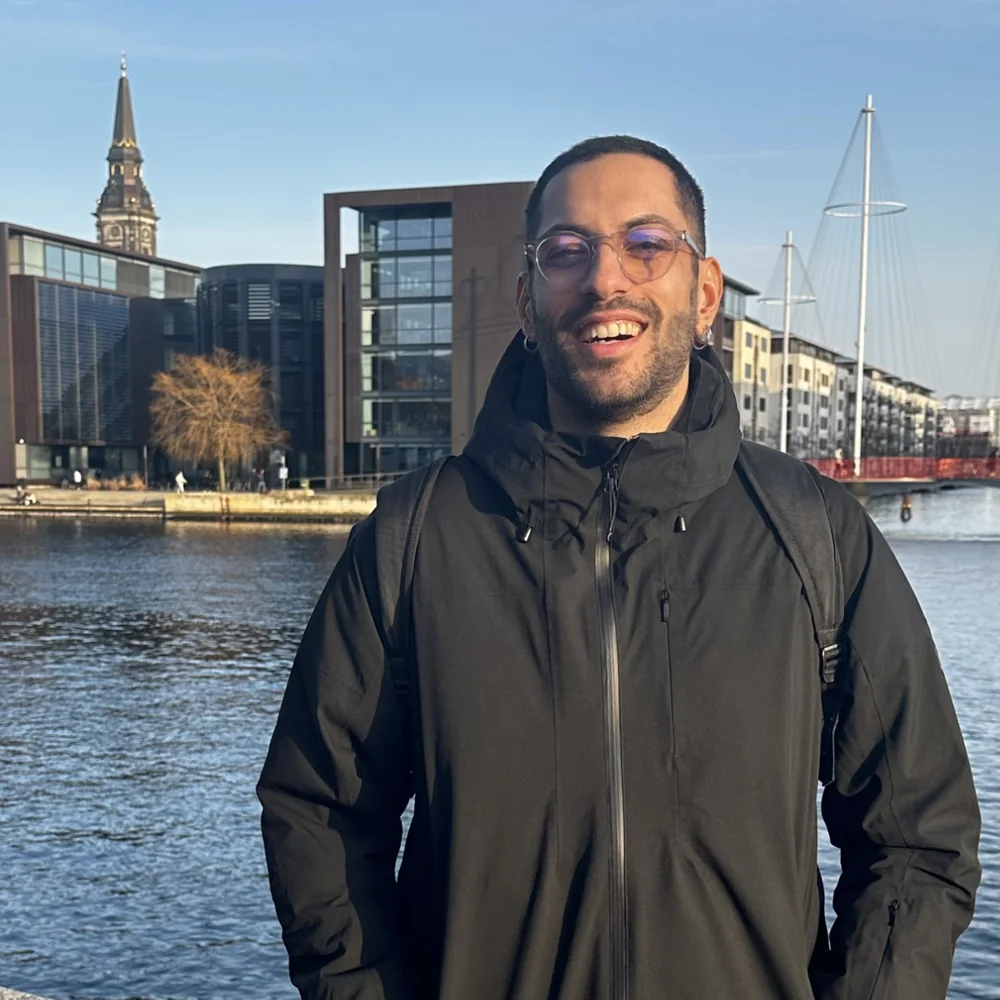

Digital Product Designer
Faccio in modo che prodotti digitali complessi restino coerenti, usabili e accessibili anche quando diventano grandi. Design system, esperienze con AI, piattaforme enterprise.
Guarda come lavoroChi c'e dietroIl filo rosso l'ho visto solo dopo.

Da fuori sembra un percorso sparso. Da dentro puntava tutto nello stesso posto: i sistemi, non le schermate.
Leggi la storia interaCase study
Ogni progetto qui dentro racconta come ragiono, non solo cosa ho prodotto.
Tre anni di design system multi-prodotto, e la strategia per il passo successivo.
Un sistema di componenti che trasforma la conversazione in lavoro dentro Askme.
L'80% del flusso non tocca mai un LLM. Di proposito. E conviene a tutti.
Principio emerso
Rules before artifacts: valida i vincoli prima di produrre l'output. Il rework che previeni è invisibile, ed è proprio per questo che è sottovalutato.
Fuori dal lavoro · Progetto personale
Un progetto editoriale di viaggio costruito da zero con mio fratello: lui percorre gli itinerari e li documenta, io ho costruito tutto il resto: identità, sito, sistema editoriale, strategia. È quello che succede quando progetto qualcosa di mio, senza committente.
◈ Sito in costruzione
Ne parliamoContatti
Che tu abbia un progetto, una posizione o solo una curiosità: scrivimi, rispondo davvero.
simone.ariotti97@gmail.com